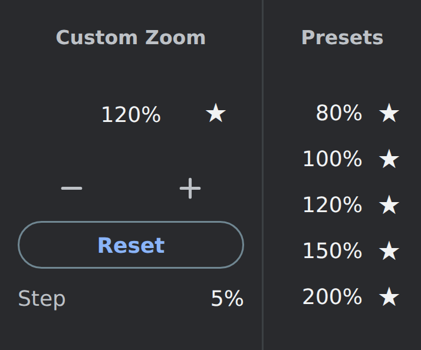

Find your perfect size
Type any whole-number percentage from 25% to 500%. Chrome's native zoom adjusts the page.
Choose the exact zoom that feels right, save favorite percentages, and optionally adjust Chrome's global default and minimum font sizes.
FreeOpen sourceNo account required

Everything you need, one click away.
Type any whole-number percentage from 25% to 500%. Chrome's native zoom adjusts the page.
Choose how many percentage points each − or + click changes. Start with 5, or set your own step from 1 to 475.
Keep up to five presets, sorted in ascending order. Apply one instantly or unstar it to remove it from your saved list.
Optionally control Chrome's global default and minimum font sizes. Minimum size is capped at 18 px in the extension to keep the popup usable.
No analytics, ads, or account. The extension stores only your step size, presets, and whether global font controls are enabled. Chrome handles the actual zoom and font settings.
Pin the extension, open its popup, and enter a percentage. Press Enter to apply it. Use Reset to restore Chrome's configured default zoom. Turn on Global Font Size only when you want the extension to control Chrome's browser-wide default and minimum font sizes. Some internal or restricted pages do not allow extension-controlled zoom.